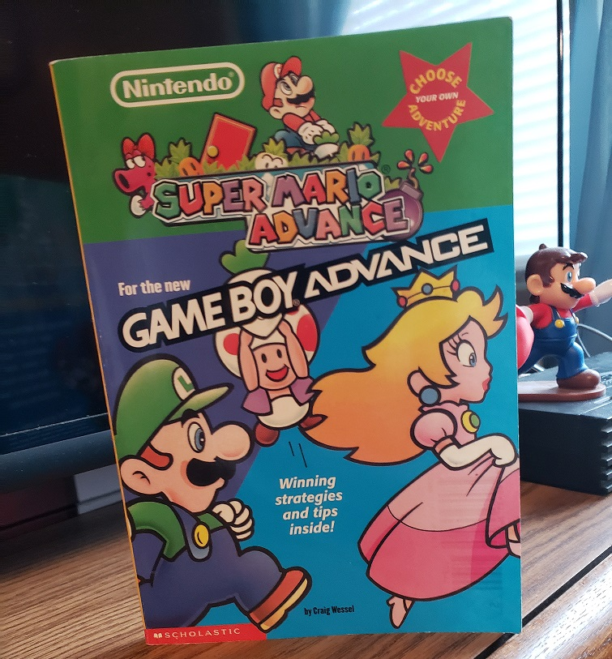

This is a Scholastic book from 2001 based on the Super Mario Advance game on the Gameboy Advance. Written by Craig Wessel, there additionally were some Zelda and Wario Land themed CYOA books published. Besides the story, these doubled as basic guides to the real game. My article will guide you as well. On the CYOA part.. not the game. How does this compare to the decade older Nintendo Adventure Book series from a decade before? Continue on. There are, well, spoilers obviously.
Story and characters: We closely follow the story of Super Mario Advance 1, which of course a port of Super Mario Bros 2/USA. Mario and friends are stuck in the dreamworld of Subcon where evil Wart has taken over. We start with Mario who has a dream where the Subcon people request help. He then wakes up for a normal picnic with Luigi, Peach, and Toad- or so he thinks. He’s still actually in a dream as you’ll see, regardless you don’t want to wake up before Wart is defeated.
After the short intro page you take control of either Mario, Luigi, Peach, or Toad. After a while they meet up again and tackle the rest of the journey as a team. Allowing you choose the POV is interesting at least. The enemies and occasional bosses appear with careful note of how to defeat them in the actual game. Various locations from the game are heavily featured as well. You confront Wart at the end and kick his butt. You wake up and it was all a dream! Again! Or was it?
Structure and writing: This is where things plummet even compared to the weaker Nintendo Adventure Books. The choices you are allowed to make are rudimentary if even that. There are no puzzles and little logic to what’s a good choice or not. Of course, with only four bad endings we can't consider the adventure 'rife' with danger.. Your character acquires a guide book immediately, and know how to handle obstacles that could have easily been a skill or knowledge-check. There really aren't branching paths like they tease occasionally, and since the real game often involves doors and warping, the book can cheat your character anywhere it needs them to be uneventfully.
Each character does encounter different things and explore areas with different themes, at least until the rendezvous. Oddly the lengths of their adventures aren’t exactly even. There is a point where it seems you can split them up again but that’s a fake choice. Only one character will complete the objective and it’s not even any kind of check, as you won't get punished for choosing wrong. One part in Wart’s castle CAN kill you, but there's no hint about it. Overall, the Choose-Your-Own-Adventure element is weak.
Do the characters shine? Not really. There aren’t any funny lines or banter whether they're grouped up or not. Birdo has some basic lines in her encounter, but other foes lack any trash talk. The most interesting happening is their attempt at a subversion with who defeats Wart.
Illustrations and other features: A cute feature is that the POV of the page is represented by a character icon and so when everyone is together you get all four portraits. Rarely you get small game screenshots or stock art on the main pages. The middle pages of the book are in gloss color but they only contain a short quip about the characters or just more screenshots. The back pages are the Travelers Guide to Subcon pages explaining again the characters but also the items and enemies. How helpful this is is debatable as there are no images to accompany the descriptions and the game's manual would feature this anyway.
Overall thoughts: A book for die-hard Mario written media collectors only. None of the liveliness of the Nintendo Adventure Books is present and the CYOA aspect is as dry as it gets. Regarding their secondary goal of acting as a guide, they mess up there too. There could have been puzzles and item-checks to engage the reader and teach game mechanics upon success or failure, or options with the enemy encounters, of which there are many. Instead, all of those events occur on autopilot, like it's a normal book. A boring normal book. I've no choice. 1/5 stars.
'Fun fact': The back cover says there are more than one ending. Hmm, well if we count the four additional bad ones, but equals only a scant five endings in all. Furthermore, the bad endings taunt you by saying that you’ve reached the worst possible ending for your character. That’s false because each character only has ONE personal ending. Even later when the group meet up, if you game over you are sent to a character (Mario’s to be exact) personal bad ending.
Stats: